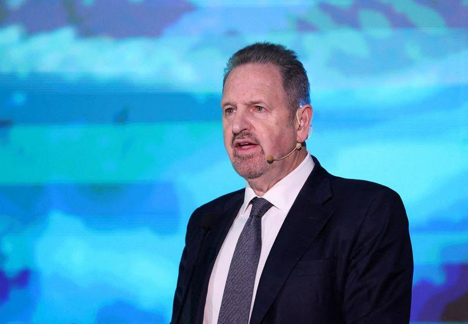

Nvidia Board Approaches Arm CEO Rene Haas as Huang Successor; Employees Push for Founder's Return
Nvidia's board has approached Arm CEO Rene Haas as a potential successor to Jensen Huang, the Financial Times reported on Friday, November 13, 2026. Haas, who spent seven years at Nvidia before becoming Arm CEO in 2022 and leading its 2023 Nasdaq listing, is one of several candidates, with no guarantee of an offer or acceptance. The board says it has not formally engaged any candidate and calls speculation premature. Inside Nvidia, an internal post urging the board to weigh employee sentiment has drawn more than 1,600 comments, many calling for Huang's reinstatement, and Elon Musk said on X he would sign a petition to bring Huang back. Dual-verified: Reuters report read in full plus Decrypt report read in full; Reuters notes it could not independently verify the reports.

- 01THE APPROACH — The Financial Times reported on Friday, November 13, 2026, that Nvidia's board has approached Arm CEO Rene Haas as a potential successor to Jensen Huang, who resigned on Thursday after 33 years leading the company. Haas is one of several candidates, with no guarantee of an offer or acceptance.
- 02THE EMPLOYEE CAMPAIGN — An internal Nvidia post urging the board to consider employee sentiment has drawn more than 1,600 comments, Wired reported, with several calling for Huang's reinstatement. Elon Musk said on X that a petition to reinstate Huang was underway and that he would sign it.
- 03THE WATCHPOINT — The board said it was still selecting a search firm and had not formally engaged any candidate, calling speculation premature. Nvidia reports earnings on November 17 with interim CEO Colette Kress at the helm, and the call will be the first public test of the search.
WHAT HAPPENEDWhat Happened
Nvidia's board has approached Arm CEO Rene Haas as a potential successor to Jensen Huang, the Financial Times reported on Friday, November 13, 2026, in the first named approach of the chipmaker's CEO search. Haas is one of several candidates under consideration, and there is no guarantee he will be offered the job or accept it, the Financial Times reported. Huang stepped down on Thursday after 33 years leading the company he co-founded, following reports of extramarital relationships, including one with a business executive suspected by U.S. officials of having Chinese intelligence ties. Chief financial officer Colette Kress serves as interim CEO, and longtime director Harvey Jones has become board chair.
Haas would arrive with unusual familiarity. He spent seven years at Nvidia as vice president and general manager of its computing products business before joining Arm in 2013, became Arm's CEO in February 2022, and led the company back onto the Nasdaq in September 2023 at an initial valuation of about $54.5 billion. He also sits on SoftBank's board and, since April, has served as CEO of SoftBank Group International, so a move to Nvidia would require untangling ties with a company that is both an owner of Arm and a partner whose interests increasingly overlap with Nvidia's in data-center hardware. Analysts cited by Reuters said Haas is one of few external candidates who would not need to be brought up to speed on Nvidia, and Decrypt notes that other names floated include Nvidia data-center executive Ian Buck and AMD chief Lisa Su.
Inside Nvidia, a parallel campaign is pushing the other way. An internal post by a longtime engineer urging the board to consider employee sentiment before taking any action has drawn more than 1,600 comments, Wired reported late on Thursday, citing internal correspondence it reviewed, with several commenters calling for Huang's reinstatement. One anonymous employee wrote: 'If you believe in the mission, bring back THE boss.' Other staff members have demanded transparency around the circumstances of Huang's departure. Elon Musk separately said on X that a petition was underway to reinstate Huang and that he would sign it, though it was not immediately clear whether he was referring to the internal effort. Nvidia declined to comment on the Wired report and on Musk's post, and Arm declined to comment. The board, responding to questions about the approach, said it was still selecting an executive search firm and had not formally engaged any candidate: 'Any speculation regarding individual candidates, whether internal or external, is premature.' Arm's U.S.-listed shares closed down about 5% on Friday, and Nvidia's shares ended about 2% lower, bringing market value losses for the week to about $573 billion.
WHY IT MATTERSThe board is shopping for continuity, not a clean break
Haas is the continuity candidate in a search that could easily become a rupture. He knows Nvidia's engineering culture from the inside, he has run a public chip company through an IPO and into the data-center buildout, and he maintains strong ties to Huang and some Nvidia directors, according to the Financial Times. That profile fits a board that needs a credible successor fast, before the November 17 earnings call becomes a referendum on the vacancy, without handing the company to an outsider who would need a year to learn how it works.
The counterweight is the employee campaign, and it is not a sideshow. More than 1,600 comments on an internal post, in a company of about 42,000 employees, is a visible vote of no confidence in the way the exit was handled, and the demand for transparency suggests the board's problem is not only finding a CEO but explaining the last one. The campaign does not mean the board has opened talks to reinstate Huang, and nothing in either report suggests it has. But it raises the cost of picking a successor who reads as a repudiation of the founder, and it gives Haas, a Huang-era insider, an edge over a pure outsider.
WHAT TO WATCHWatch the earnings call, not the rumor mill
The next fixed date is November 17, when Nvidia reports earnings with Kress at the helm and the succession search still open. The call will be the first time the interim leadership has to answer for the search in public, and any signal about the timetable, or about whether the board is leaning internal or external, will move the stock more than another named candidate. The board's own statement is the guardrail: it has not formally engaged any candidate, so the Haas approach is an approach, not a hire, and Reuters could not independently verify the reports.
The structural question outlasts the name. Whoever takes the job inherits not just the lead in AI chips but delicate relationships with governments and customers as Washington debates tighter export restrictions on China, and a company whose founder personally steered engineering roadmaps, geopolitical negotiations and massive investments across the AI ecosystem for three decades. The next CEO has to replace a hands-on 'chief conductor' with a more institutional leadership structure, and the choice between an insider like Haas and an outsider like Lisa Su or Ian Buck is really a choice about how much of Huang's Nvidia survives him.
SIGNAL JUDGMENT — ANALYSISHaas is the safe pick; the employee revolt is the real risk
Tokenta Signal's judgment: The Haas approach is the board choosing the least disruptive credible successor, a former Nvidia executive who already runs a public chip company and knows the founder's world. That is a sensible answer to a succession crisis, but it is not yet a hire, and the board's own statement says it has not formally engaged anyone. The number that matters more is 1,600: an internal campaign of that size, demanding transparency about Huang's exit, tells the board its legitimacy problem is not solved by naming a successor. If the November 17 earnings call turns into a debate about the search instead of the numbers, the board will have learned that picking the next CEO is the easy half of the job. Judge the search on whether the board can name someone before the rumor mill names them.
WHAT REMAINS UNCERTAINWhat Remains Uncertain
EVIDENCEEvidence
Reuters, 'Nvidia approaches Arm CEO Haas as employees seek Huang's return, media reports say,' published November 13, 2026, read in full. It reports that the Financial Times said on Friday that Nvidia's board has approached Arm Holdings CEO Rene Haas in its search for a potential successor to Jensen Huang, that Haas is one of several candidates with no guarantee of an offer or acceptance, that the board said it was still selecting a search firm and had not formally engaged any candidate, that an internal Nvidia post urging the board to consider employee sentiment has drawn more than 1,600 comments with several urging Huang's reinstatement as reported by Wired, and that Elon Musk said on X that a petition to reinstate Huang was underway and that he would sign it. Decrypt, 'Could a Former Nvidia Executive Replace Jensen Huang? Arm's Rene Haas Emerges as Candidate,' published November 13, 2026, read in full, independently reports the Financial Times account of the approach, Haas's seven years at Nvidia and his path to Arm CEO in February 2022 and its September 2023 Nasdaq listing, and the Wired account of the internal post with more than 1,600 comments.
PRIMARY SOURCESPrimary Sources
- Reuters: Nvidia approaches Arm CEO Haas as employees seek Huang's return, media reports say
https://kwsn.com/2026/11/13/arms-haas-approached-by-nvidia-board-as-part-of-ceo-search-ft-reports/ - Decrypt: Could a Former Nvidia Executive Replace Jensen Huang? Arm's Rene Haas Emerges as Candidate
https://decrypt.co/383276/nvidia-arm-ceo-rene-haas-replace-jensen-huang - Wired: internal Nvidia post on employee sentiment and Huang's future (as cited by Reuters and Decrypt)
https://www.wired.com/